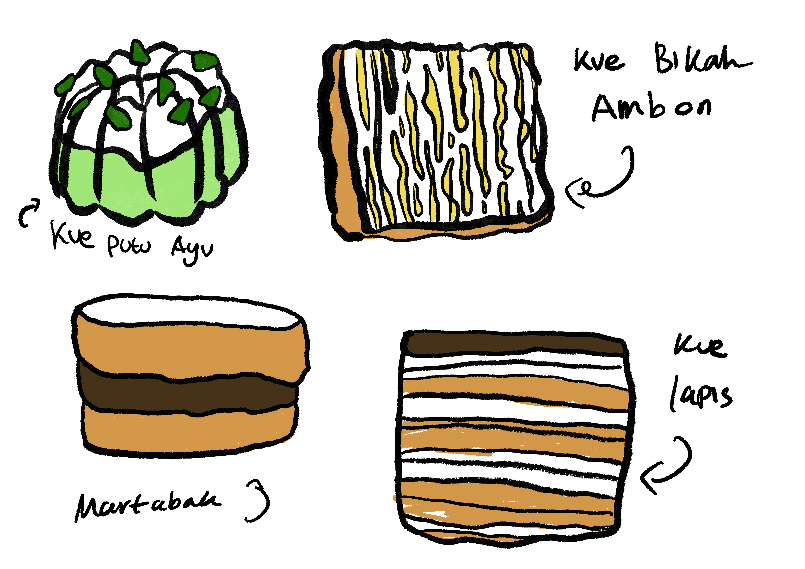
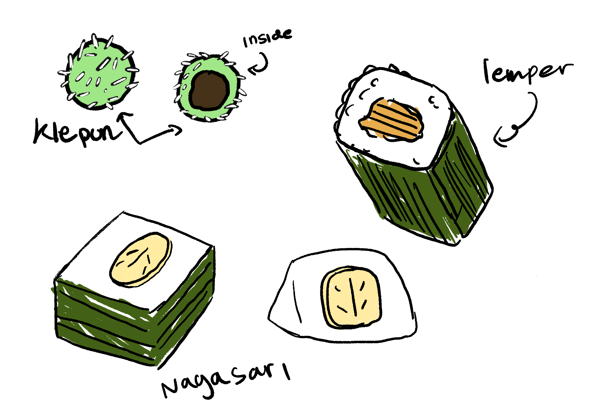
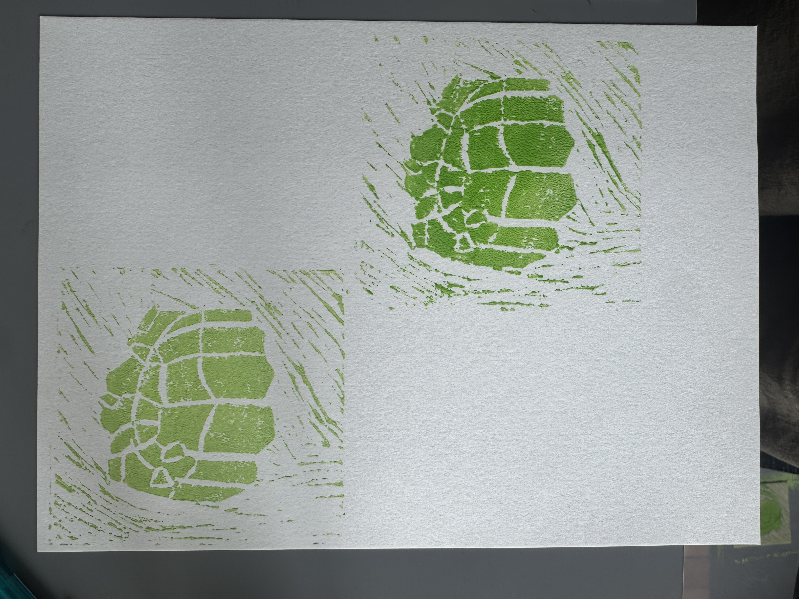
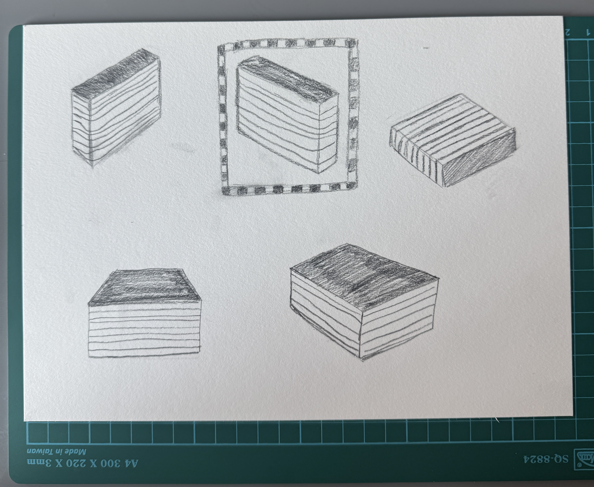
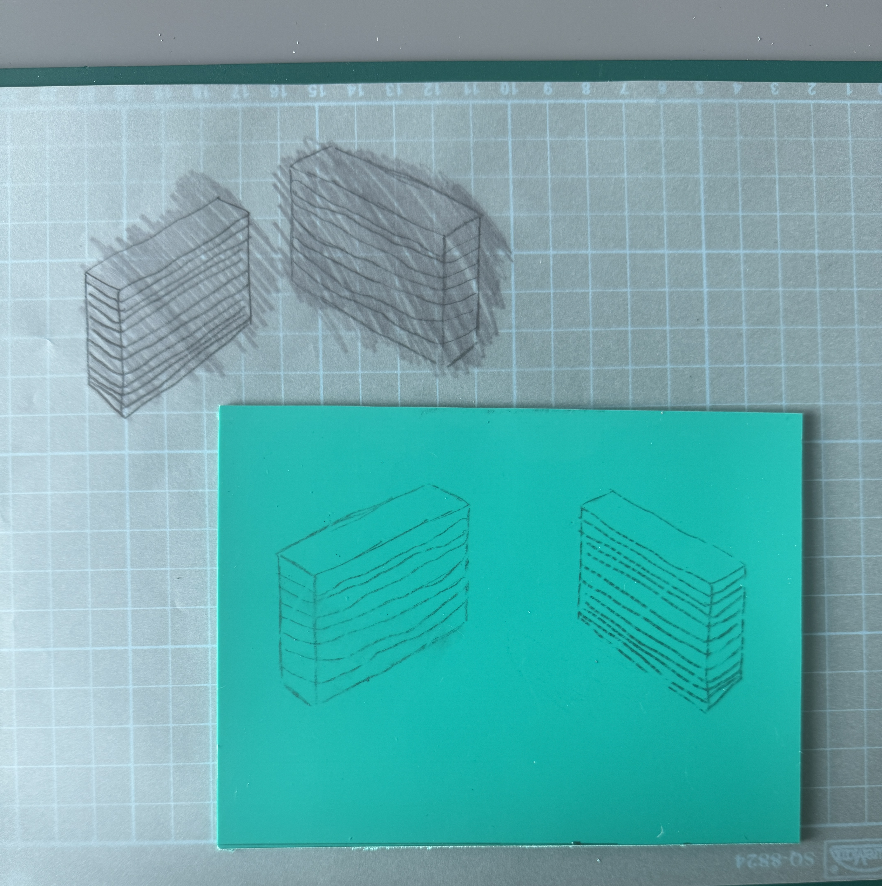

Design Process


For this week I wanted to try doing lino print for my project. So I decided to sketch the snacks digitally and have it printed out before I can trace it and started to do my lino. The line weight isn’t consistent because I was playing around with the thickness of the stroke. At this point, I was playing around with the form of the snack, making sure that I got the form as exact as possible to the one in real life.



When I first did my lino print it ended up failing because I forgot to carve the outside area of the snack. But for my second print, it did come out better than I was expecting because it came out clean with the lines clearly defined.


I also wanted to try drawing on paper rather than digitally because when I printed out, the scale of the snack was bigger than I expected. It’s also easier for me to alter the scale if I draw straight from paper.
Reflection
This week